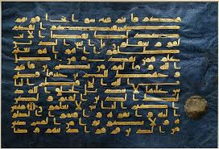
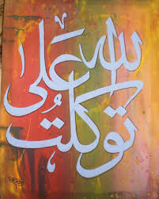
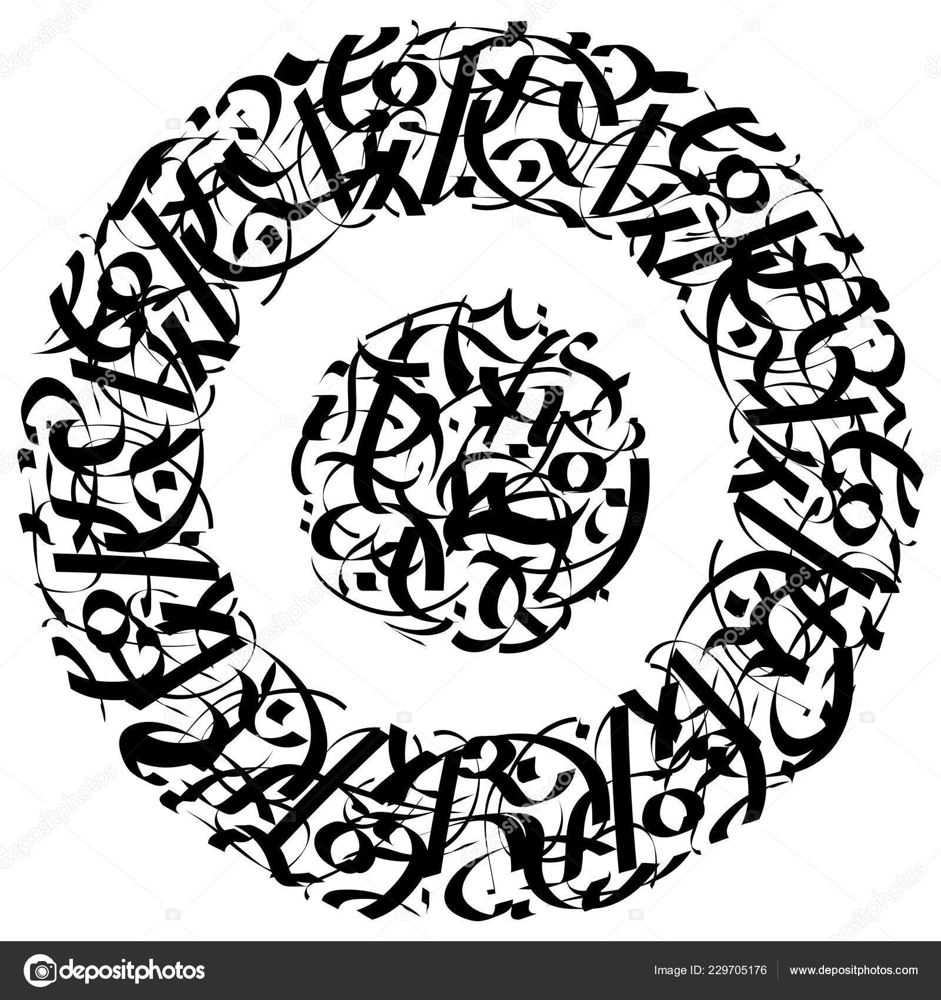
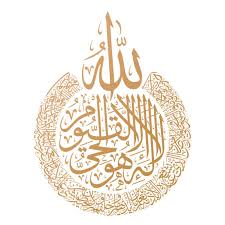
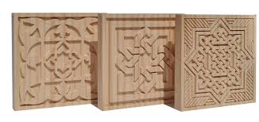
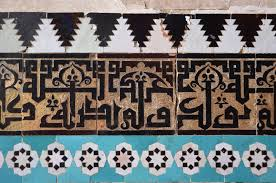
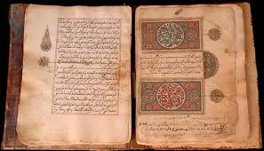
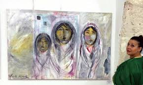
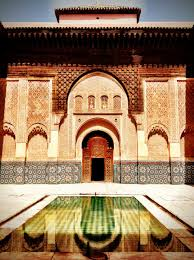

Calligraphie Marocaine
La calligraphie marocaine est un art sacré qui allie spiritualité et esthétique, un héritage culturel transmis à travers les siècles par les maîtres calligraphes.
Styles Calligraphiques

Coufique Marocain
Style angulaire utilisé dans les monuments historiques, caractérisé par ses proportions géométriques parfaites et ses motifs entrelacés.

Mabsout
Style cursif utilisé pour les copies du Coran et les documents officiels, alliant lisibilité et élégance.

Style Ornemental
Calligraphie fleurie utilisée pour les décorations architecturales et les œuvres d'art, avec des courbes élégantes.
Outils du Calligraphe
Qalam
Roseau taillé utilisé comme plume, préparé selon des méthodes traditionnelles
Support
Papier vergé, parchemin ou papier wasli pour la pratique
Encre
Encre noire traditionnelle ou encres colorées à base de pigments naturels
Mastara
Guide pour tracer des lignes parfaitement droites et régulières
Chefs-d'œuvre Calligraphiques






Un Art Vivant
La calligraphie marocaine n'est pas qu'un art du passé. Aujourd'hui encore, des maîtres calligraphes perpétuent cette tradition tout en l'adaptant aux expressions contemporaines. Des médersas historiques aux galeries d'art modernes, cet art continue de fasciner par sa beauté et sa profondeur spirituelle.
Plus qu'une simple technique d'écriture, la calligraphie arabe au Maroc est une méditation, une prière visuelle qui unit l'artiste à la divine parole.